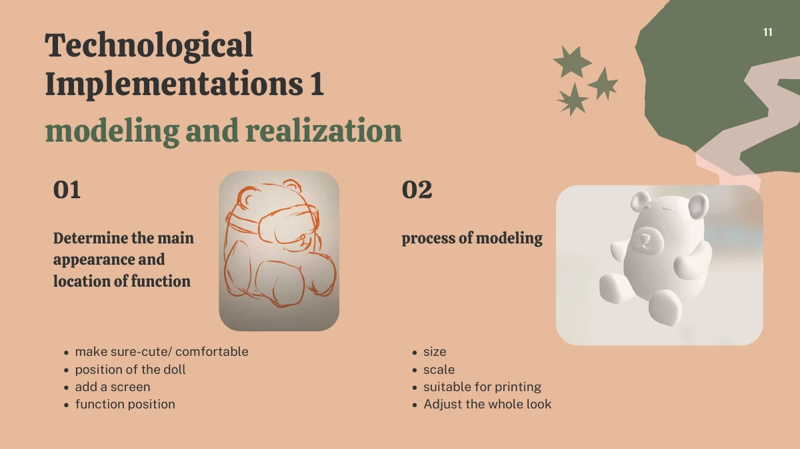
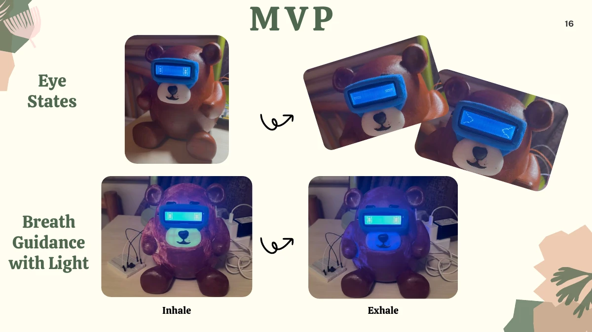

How can conversation and physical feedback make a companion device more approachable?
Stage 1 · Designing the companion bear
I led a three-person team advised by Giovanni Santini to explore companionship for university students experiencing loneliness, stress, and sleep difficulties. I used questionnaires to understand when students felt lonely, their habits, and their expectations of a companion device. Literature and product reviews informed a bear-shaped design combining conversation, animated expressions, warm lighting, and breathing-guided vibration. A soft, holdable form was a design goal; the first enclosure was resin-printed because of material cost and printer constraints.
The early research connected an emotional need with concrete interaction choices. A familiar animal form could make the device approachable; expressive eyes could acknowledge the user; vibration and warm lighting could provide a nonverbal rhythm. These were design hypotheses informed by research and feedback. They were not treated as evidence that a particular enclosure or interaction could independently resolve loneliness or sleep problems.

Building and refining the first prototype
I developed the ESP32-based expressions, vibration feedback, and warm lighting. Working within an LCD limit of eight custom characters, I refined static eyes into blinking and squinting animations. I iterated vibration timing for breathing guidance using user feedback. A teammate developed the initial voice software, and another led the 3D modeling; I helped shape the appearance and component layout, managed 3D printing, adjusted the display fit, and assembled the prototype. The early voice pipeline relied on fixed recording windows and local files, making dialogue vulnerable to false triggers and truncated speech. These limitations motivated the next stage.
The first prototype required compromises between the intended tactile experience and available fabrication methods. I tested material samples of different hardness while using a resin enclosure for the functional build. Display placement also required physical adjustment after the model did not fully accommodate the hardware. This work linked electronics, enclosure layout and assembly rather than treating the appearance and the interaction as separate deliverables.

Stage 2 · Rebuilding the voice-to-action loop
I independently redesigned the voice architecture around continuous communication between an ESP32-S3 and a computer host. The board captures microphone audio over I²S and streams PCM audio; USB framing, sequence numbers, and CRC32 checks make frame boundaries and transmission errors identifiable. After on-device wake-word initialization caused watchdog resets, I moved wake-word detection to PocketSphinx on the host. Voice activity detection segments speech, Qwen services provide recognition and conversation, and synthesized replies return to the device speaker. This division of work keeps real-time sensing and physical control on the board while assigning heavier processing to the host.
During the October 2026 redesign, I addressed a specific failure mode: a sequence of isolated recordings and file transfers could not reliably sustain conversation. Continuous microphone capture, explicit message framing and execution acknowledgments made the communication loop inspectable. Debugging the USB output path was important because short binary handshake frames were not reliably delivered through the original buffered output mechanism.
Giving conversation a physical response
The host interprets a request in context and decides whether to respond, clarify, or propose a supported action. Hardware commands are validated before execution, and the board’s reported result informs the reply. The design supports multi-turn conversation, interruption handling, and status feedback through OLED expressions. Wi-Fi and USB carry audio and control messages between the device and host.
The physical-response loop translates a conversational request into structured parameters, checks them against supported hardware actions, and returns an execution result. This gives the conversation a way to distinguish an intended action from an action the board has actually completed. Continued audio capture and interruption handling support follow-up speech instead of forcing the user through a rigid sequence of recording and playback steps.
Integration choices and current scope
A later Wi-Fi and WebSocket design extends the audio-and-command pipeline toward wireless communication, with buffering, reconnection handling, and interruption control. It still requires a running computer. Echo and motor-noise handling address false interruptions. The project taught me how architectural choices shape the continuity and naturalness of an interaction, alongside the importance of physical feedback and user-led iteration. Battery-powered operation and lighter on-device processing remain future directions. These prototypes do not establish therapeutic effects or a finished consumer product.
The two stages therefore contribute different things: the first explores physical expression and user feedback through a team-built companion, while the second revisits the communication architecture through independent engineering work. The current boundary is important: wireless data transport still depends on a host computer, and battery operation or fully on-device speech processing remains future work.
Materials & scope
Long-form statement drafts (October 2026); first-prototype design presentation, pages 11–16; later voice-system documentation and README. The two stages are distinguished rather than presented as one completed stand-alone product.